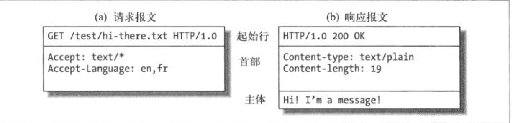
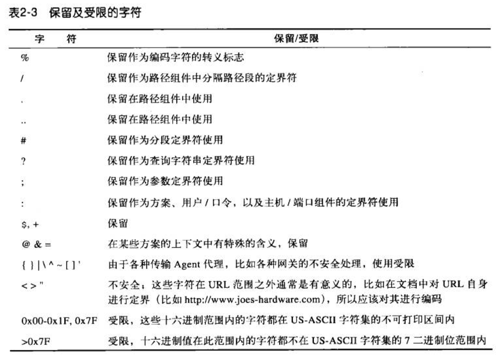
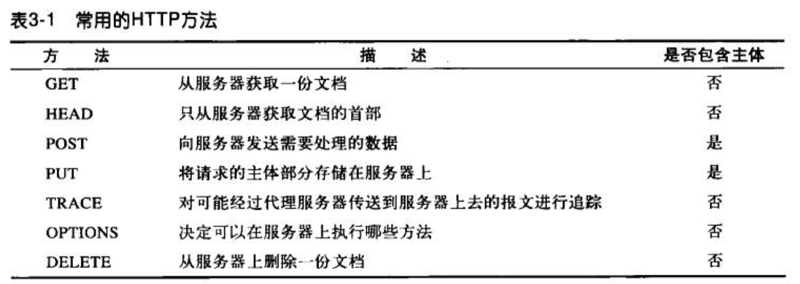
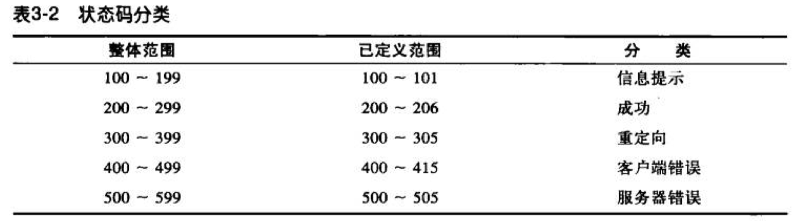

HTTP 权威指南笔记
第一章
####1.1 媒体类型 MIME
MIME 类型是一种文本标记，表示一种主要的对象类型和一个特定的子类型，中间由一条斜杠来分割。
- HTML 格式的文本文档有 text/html 类型标记
- 普通的 ASCII 文本文档由 text/plain 类型标记
- JPEG 版本的图片为 image/jpeg 类型
- GIF 格式的图片为 iamge/gif 类型
- Apple 的 QuickTime 电影为 video/quicktime
- 微软的 PowerPoint 演示文件为 application/vnd.ms-powerpoint
#####1.2 URI
URI（统一资源标识符）用于定位信息资源
1.3 URL
URL (统一资源定位符) 是资源标识符最常见的形式，描述了一台特定服务器上某资源的特定位置。URL 包含三个部分：
- 第一部分称为方案（scheme），说明了访问资源所使用的协议类型。（通常为 http 协议）
- 第二部分给出了服务器的因特网地址
- 其余部分指定了 Web 服务器上某个资源
1.4 URN
URN 统一资源名，作为特定内容的唯一名称使用，与当前资源所在地无关。
1.5 事务
一个事务由一条（客户端）请求命令和一个（服务器）响应结果组成。这种通信是通过 HTTP 报文的格式化数据块进行的。
- HTTP 方法：包含 GET、PUT、DELETE、POST、HEAD
- 状态码：包含 200、302、404 等
- Web 页面中可以包含多个对象
1.6 报文
报文是由一行一行的简单字符串组成的，分为客户端请求报文和服务端的响应报文

报文分为三个部分
- 起始行：报文的第一行，用来说明要做些什么，在响应报文中说明出现了什么情况
- 首部字段：起始行后面有零个或多个的首部字段，每个首部字段都包含一个名字和一个值，用冒号（:)来分隔，以一个空行结束
- 主体：空行之后就是可选主体，包含所有类型的数据
#####1.7 连接
- TCP/IP：提供了无差错数据传输、按序传输、未分段的数据流
- 连接、IP地址及端口号
#####1.8 协议版本
#####1.9 Web 的结构组件
- 代理：位于 client 和 server 之间的 HTTP 中间实体
- 缓存：HTTP 的仓库
- 网关：连接其他应用程序的特殊 Web 服务器
- 隧道：对HTTP 通信报文进行盲转发的特殊服务器
- Agent 代理：发起自动 HTTP请求得半智能 Web 客户端
第二章 URL
#####2.1 编码机制
编码机制用来在 URL 中表示各种不安全的字符(~ 空格 % 等)，通过一种转义表示法来表示不安全的字符，表示法包含一个百分号（%），后面跟着两个表示字符 ASCII 码的十六进制数。
#####2.2 字符限制

#####2.3 方案的世界
- http 超文本传输协议方案
- https 与 http 是一对，区别在于 https 使用了 ssl 端到端的加密机制
- mailto 指向的是 E-mail 地址
- ftp 文件传输协议，可以用来从 FTP 服务器上下载或向其上载文件，并获取 FTP 服务器上的目录结构内容的列表
- rtsp、rtspu 是可以通过实时流传输协议解析的音视频媒体资源的标识符，rtspu 中的 u 表示使用 UDP 协议来获取资源
- file 表示一台指定主机上可直接访问的文件
- news 用来访问一些特定的文章或新闻组，自身包含的信息不足以对资源进行定位
- telnet 用于访问交互式业务。表示的并不是对象自身，而是可通过 telnet 协议访问的交互式应用程序
第三章 HTTP 报文
HTTP 报文是在 HTTP 应用程序之间发送的数据块，这些数据块以一些文本形式的元信息开头，这些信息描述了报文的内容及含义，后面跟着可选的数据部分。术语用“流入”、“流出”、“上游”及“下游”描述报文方向。
3.1 报文的组成部分
请求报文格式：
|
|
响应报文格式：
|
|
描述：
方法 (method)
客户端希望服务器对资源的执行动作。如：GET、HEAD、POST

请求 URL (request-URL)
命名了所请求资源的完整 URL
版本 (version)
报文中所使用的 HTTP 版本
状态码 (status)
这三位数字描述了请求过程中所发生的情况

原因短语 (reason-phrase)
数字状态码的可读版本，包含行终止序列之前的所有文本
首部 (header)
可以有零个或多个首部，由一个空行结束，表示首部列表的借宿和实体主体部分的开始
实体的主体部分 (entity-body)
任意数据组成的数据块
3.2 方法
- GET 通常用于请求服务器发送某个资源
- HEAD 与 GET 方法类似，但服务器在响应总只返回首部，不返回实体部分
- PUT 会向服务器写入文档
- POST 通常用来提交表单
- TRACE 允许客户端在最终请求发送给服务器时，看看它变成什么样子。追踪原始报文是否，以及如何被毁坏或修改过。主要用于诊断
- OPTIONS 请求 Web 服务器告知其支持的各种功能
DELETE 请求服务器删除请求 URL 所指定的资源
GET 与 POST 的区别主要是幂等与安全性，链接知乎对于这个问题的讨论。https://www.zhihu.com/question/28586791